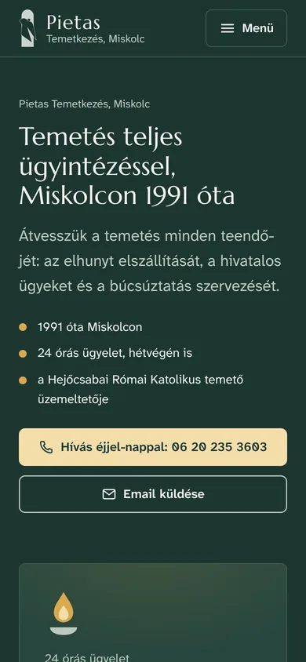

1. lépés
A család telefonról keresi az ügyeletet
A kezdőlap szövegében
- „…nyugodtan hívják a 06 46 431 014-es telefonszámot vagy a 06 70 9 475 490-es mobil számot.”
- A számok szövegként, nem egy koppintással hívhatók

Miért fontos?
51%
Magyarországon a weboldal-látogatások 51%-a telefonról érkezik.
Forrás: StatCounter, 2026. július